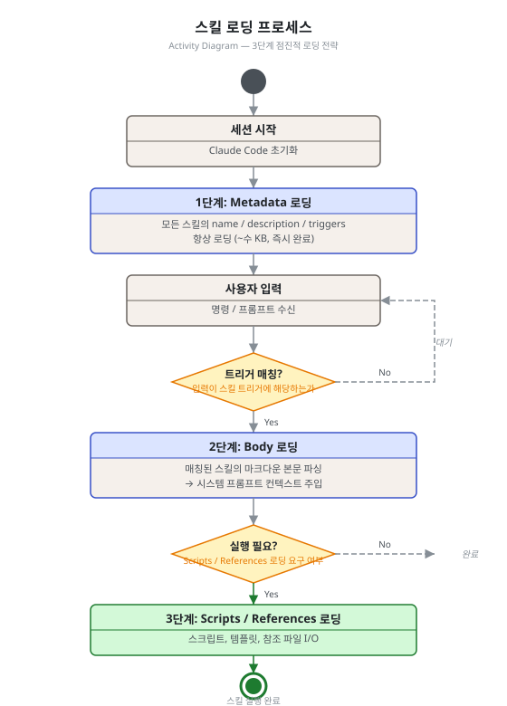
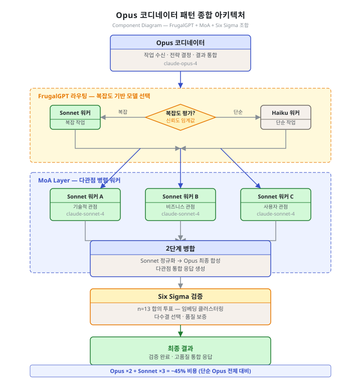

제9단원. 에이전트 구현 가이드 — 에이전트를 직접 만들기¶
학습 목표¶
이 단원을 마치면 다음을 할 수 있다:
- YAML frontmatter + Markdown 형식으로 에이전트 정의 파일을 작성할 수 있다
- SKILL.md 형식으로 스킬을 정의하고 3단계 로딩 프로세스를 이해할 수 있다
- hooks.json으로 생명주기 이벤트에 자동화를 등록할 수 있다
- 모델 티어 배정 전략을 설계할 수 있다
- 코드 리뷰 에이전트를 직접 만들 수 있다
9.1 에이전트 정의 파일 형식¶
YAML Frontmatter + Markdown Body¶
Claude Code의 에이전트는 .md 파일로 정의된다. 파일 상단에 YAML frontmatter로 메타데이터를, 본문에 시스템 프롬프트를 기술한다.
---
name: "code-reviewer"
model: "claude-sonnet-4-20250514"
description: "코드 리뷰 전문 에이전트. 변경된 코드의 품질, 패턴, 보안 이슈를 분석한다."
tools:
- "Read"
- "Grep"
- "Glob"
- "Bash(git diff:*)"
- "Bash(git log:*)"
disallowed-tools:
- "Write"
- "Edit"
- "Bash(rm:*)"
category: "quality"
---
# Code Reviewer Agent
## 역할
변경된 코드를 분석하여 품질, 패턴 준수, 보안, 성능 이슈를 발견한다.
## 리뷰 기준
### CRITICAL (즉시 수정 필수)
- 보안 취약점 (SQL 인젝션, XSS, 인증 우회)
- 데이터 손실 가능성
- 무한 루프 / 메모리 누수
### HIGH (병합 전 수정 권장)
- 에러 핸들링 누락
- 경쟁 조건
- 성능 병목
## 출력 형식
이슈별로 [등급] 파일:라인 — 설명 형태로 출력한다.
필드 상세¶
| 필드 | 타입 | 필수 | 설명 |
|---|---|---|---|
name |
string | Y | 에이전트 고유 식별자 |
model |
string | N | 사용할 모델. 미지정 시 세션 기본 모델 |
description |
string | Y | 역할 설명. 오케스트레이터가 위임 시 참조 |
tools |
list | N | 허용 도구 목록 |
allowed-tools |
list | N | 화이트리스트 (이 목록만 허용) |
disallowed-tools |
list | N | 블랙리스트 (이 목록은 차단) |
category |
string | N | 분류 (orchestrator, quality, workflow 등) |
maxTurns |
number | N | 최대 대화 턴 수 |
temperature |
number | N | 모델 temperature (0.0~1.0) |
도구 접근 제어¶
화이트리스트 vs 블랙리스트: allowed-tools가 존재하면 블랙리스트는 무시된다. Bash 도구는 콜론 패턴으로 세분화할 수 있다:
9.2 스킬 정의 형식¶
SKILL.md 구조¶
스킬은 skills/ 디렉토리 하위에 개별 디렉토리로 구성된다:
skills/
└── my-review/
├── SKILL.md ← 스킬 정의 (필수)
├── templates/ ← 템플릿 (선택)
└── scripts/ ← 자동화 스크립트 (선택)
---
name: "my-review"
description: "변경된 코드를 리뷰하고 이슈를 분류한다."
category: "quality"
triggers:
- "코드 리뷰"
- "code review"
- "리뷰해줘"
allowed-tools:
- "Read"
- "Grep"
disable-model-invocation: false
---
# Code Review Skill
## 프로세스
1. `git diff` 를 실행하여 변경된 파일 목록을 확인한다
2. 각 변경 파일을 읽고 이슈를 분류한다
3. CRITICAL > HIGH > MEDIUM > LOW 순서로 보고한다
4. 개선 제안을 포함한다
## 출력 형식
| 등급 | 파일:라인 | 설명 | 제안 |
|------|----------|------|------|
3단계 로딩 프로세스¶
스킬은 성능 최적화를 위해 점진적으로 로딩된다:
[세션 시작]
│
▼
1단계: Metadata 로딩 (모든 스킬의 name/description/triggers)
│ 메모리: ~수 KB
│
│ 사용자 입력 → 트리거 매칭
▼
2단계: Body 로딩 (매칭된 스킬의 마크다운 본문)
│ 컨텍스트에 주입
│
│ 실행 필요 시
▼
3단계: Scripts/References 로딩 (스크립트, 템플릿)
파일 I/O 발생

9.3 훅 시스템¶
hooks.json 구조¶
훅은 Claude Code의 생명주기 이벤트에 등록되는 스크립트이다:
{
"hooks": {
"PreToolUse": [
{
"matcher": "Write|Edit",
"command": "node .claude/hooks/detect-secrets.js",
"description": "시크릿 패턴 감지"
}
],
"PostToolUse": [
{
"matcher": "Bash",
"command": "node .claude/hooks/analyze-build.js",
"description": "빌드 결과 분석"
}
],
"SessionStart": [
{
"matcher": "",
"command": "node .claude/hooks/session-init.js",
"description": "세션 초기화"
}
]
}
}
주요 이벤트 타입¶
| 이벤트 | 시점 | 용도 |
|---|---|---|
SessionStart |
세션 시작 | 환경 정보 주입, 메모리 복원 |
SessionEnd |
세션 종료 | 메모리 저장, 정리 |
PreToolUse |
도구 사용 전 | 위험 명령 차단, 시크릿 감지 |
PostToolUse |
도구 사용 후 | 빌드 분석, 감사 로그 |
PreSendMessage |
메시지 전송 전 | 키워드 감지, 스킬 라우팅 |
PostSendMessage |
응답 후 | 영속 모드 유지 |
Exit Code 규약¶
| Exit Code | 의미 | 동작 |
|---|---|---|
0 |
성공 | stdout의 JSON 처리 |
1 |
실패 | 훅 무시, 원래 동작 계속 |
2 |
차단 | 현재 동작 중단 (보안 훅 등) |
보안 훅 예시: 시크릿 감지¶
// hooks/detect-secrets.js
const SECRET_PATTERNS = [
{ name: "AWS Access Key", pattern: /AKIA[0-9A-Z]{16}/ },
{ name: "GitHub Token", pattern: /ghp_[a-zA-Z0-9]{36}/ },
{ name: "Anthropic Key", pattern: /sk-ant-[a-zA-Z0-9-]{95}/ },
{ name: "Private Key", pattern: /-----BEGIN\s+(RSA\s+)?PRIVATE\sKEY-----/ },
];
const input = JSON.parse(require("fs").readFileSync("/dev/stdin", "utf-8"));
const content = input.data?.content || "";
const found = SECRET_PATTERNS.filter(s => s.pattern.test(content));
if (found.length > 0) {
console.log(JSON.stringify({
action: "block",
message: `시크릿 감지: ${found.map(f => f.name).join(", ")}`
}));
process.exit(2); // 차단
} else {
process.exit(0); // 통과
}
9.4 모델 티어 배정 전략¶
3티어 원칙¶
OMC에서 검증된 3티어 배정 전략이다:
| 기준 | Opus ($$$$) | Sonnet ($$) | Haiku ($) |
|---|---|---|---|
| 추론 깊이 | 다단계 추론 필요 | 단순 추론 | 추론 불필요 |
| 창의성 | 설계 결정, 대안 비교 | 명세 기반 구현 | 패턴 적용 |
| 오류 비용 | 오류 시 재작업 비용 큼 | 오류 시 재작업 가능 | 오류 시 즉시 재시도 |
배정 매트릭스¶
┌───────────────────────┬────────┬────────┬────────┐
│ 태스크 유형 │ Opus │ Sonnet │ Haiku │
├───────────────────────┼────────┼────────┼────────┤
│ 아키텍처 설계 │ ✓ │ │ │
│ 코드 리뷰 (핵심 모듈) │ ✓ │ │ │
│ 기술 전략 수립 │ ✓ │ │ │
├───────────────────────┼────────┼────────┼────────┤
│ 코드 구현 │ │ ✓ │ │
│ 단위 테스트 작성 │ │ ✓ │ │
│ 버그 수정 │ │ ✓ │ │
│ 보안 감사 │ │ ✓ │ │
├───────────────────────┼────────┼────────┼────────┤
│ 코드 탐색/검색 │ │ │ ✓ │
│ Git 작업 │ │ │ ✓ │
│ 코드 포맷팅 │ │ │ ✓ │
└───────────────────────┴────────┴────────┴────────┘
9.5 CLAUDE.md 설계 원칙¶
원칙 1: 컨텍스트 효율성¶
CLAUDE.md가 너무 길면 매 턴마다 토큰이 낭비된다. 핵심 규칙만 포함하고, 상세한 지침은 스킬/규칙 파일로 분리한다.
원칙 2: 마커 기반 보존¶
OMC의 마커 패턴을 참고하여, 자동 생성 영역과 사용자 영역을 분리한다:
# My Project
사용자가 직접 작성한 프로젝트 규칙
<!-- AUTO:START -->
자동 생성 설정 (도구가 관리)
<!-- AUTO:END -->
사용자가 추가한 다른 규칙
원칙 3: 에이전트 라우팅 규칙 포함¶
모델 티어 배정 규칙을 CLAUDE.md에 명시하여, 에이전트가 자율적으로 올바른 판단을 내릴 수 있게 한다.
프로젝트 유형별 CLAUDE.md 템플릿¶
웹 앱 프로젝트 템플릿
# [프로젝트명] Web App
## 기술 스택
- Backend: FastAPI (Python 3.11+)
- Frontend: React 18 + TypeScript
- DB: PostgreSQL 15, Redis 7
- 테스트: pytest, Vitest
## 코딩 표준
- Python: PEP 8, type hints 필수, docstring 필수
- TypeScript: strict 모드, any 금지
- 모든 함수에 단위 테스트 작성
## 에이전트 라우팅 규칙
- 아키텍처 결정 → Opus
- 코드 구현 (100줄 이상) → Sonnet
- 코드 구현 (100줄 미만), 리팩토링 → Sonnet
- 검색, 파일 탐색, git 작업 → Haiku
## 금지 사항
- 프로덕션 DB 직접 수정 금지
- .env 파일 수정 금지
- main/master 브랜치 직접 push 금지
API 서버 프로젝트 템플릿
# [프로젝트명] API Server
## 아키텍처
- REST API (OpenAPI 3.0 스펙 유지)
- 모든 엔드포인트에 인증 필수
- Rate limiting: 분당 100 요청
## 변경 규칙
- API 스펙 변경 시 CHANGELOG.md 업데이트 필수
- Breaking change는 major 버전 업 후 진행
- 모든 엔드포인트 변경 시 통합 테스트 실행
## 보안 규칙
- SQL 쿼리는 반드시 파라미터화
- 사용자 입력은 항상 검증 후 사용
- 민감 데이터(비밀번호, 토큰)는 로그에 출력하지 않음
모노레포 프로젝트 템플릿
# [조직명] Monorepo
## 패키지 구조
packages/
api/ - Express API 서버
web/ - Next.js 프론트엔드
shared/ - 공유 타입 및 유틸리티
mobile/ - React Native 앱
## 변경 범위 규칙
- 단일 패키지 변경: 해당 패키지 테스트만 실행
- shared/ 변경: 전체 패키지 테스트 실행 필수
- 크로스 패키지 API 변경: 아키텍처 검토 후 진행
## 워크스페이스 격리
- 각 패키지는 독립 컨텍스트에서 작업
- 패키지 간 import는 shared/를 통해서만
CLAUDE.md 안티패턴¶
안티패턴 1: 너무 긴 CLAUDE.md
해결: 상세 규칙은 .claude/rules/ 폴더에 분리하고, CLAUDE.md에는 핵심 원칙만 유지한다.
안티패턴 2: 모호한 지시
안티패턴 3: 모델명 하드코딩
모델명 관리 전략: 모델명을 CLAUDE.md에 직접 쓰는 대신, .claude/config.json에서 관리하거나 환경 변수(CLAUDE_CODE_DEFAULT_MODEL)로 설정한다. 모델이 업데이트될 때 한 곳만 수정하면 된다.
9.6 실전 예시: 코드 리뷰 에이전트 만들기¶
단계 1: 에이전트 정의 파일 생성¶
---
name: "my-code-reviewer"
model: "claude-sonnet-4-20250514"
description: "프로젝트 코딩 표준에 따라 코드 리뷰를 수행한다."
tools:
- "Read"
- "Grep"
- "Glob"
- "Bash(git diff:*)"
- "Bash(git log:*)"
- "Bash(git blame:*)"
disallowed-tools:
- "Write"
- "Edit"
category: "quality"
maxTurns: 30
temperature: 0.2
---
# My Code Reviewer
## 역할
변경된 코드를 프로젝트 코딩 표준에 따라 리뷰한다.
코드를 직접 수정하지 않고, 발견한 이슈를 보고한다.
## 리뷰 프로세스
1. `git diff --name-only HEAD~1`로 변경 파일 목록을 확인한다
2. 각 파일의 변경 내용을 `git diff HEAD~1 -- <파일>`로 확인한다
3. 프로젝트의 코딩 표준 파일을 참조한다
4. 이슈를 등급별로 분류한다
## 등급 체계
- **CRITICAL**: 보안 취약점, 데이터 손실 위험
- **HIGH**: 에러 핸들링 누락, 성능 병목
- **MEDIUM**: 코드 중복, 네이밍 위반
- **LOW**: 스타일 개선, 문서화 보완
## 출력 형식
각 이슈를 다음 형식으로 보고한다:
[등급] 파일명:라인번호
문제: 발견된 이슈 설명
제안: 개선 방안
근거: 위반된 규칙 또는 모범 사례
단계 2: 리뷰 스킬 정의¶
---
name: "project-review"
description: "프로젝트 코딩 표준에 따른 코드 리뷰를 실행한다."
triggers:
- "코드 리뷰"
- "리뷰"
- "review"
category: "quality"
---
# Project Review Skill
## 활성화 조건
- 사용자가 코드 리뷰를 요청할 때
- PR 생성 직전
## 프로세스
1. my-code-reviewer 에이전트를 활성화한다
2. 변경된 파일에 대한 리뷰를 실행한다
3. CRITICAL 이슈가 0개일 때만 "리뷰 통과"로 판정한다
4. 결과를 구조화된 형식으로 보고한다
단계 3: 보안 훅 추가¶
{
"hooks": {
"PreToolUse": [
{
"matcher": "Write|Edit",
"command": "node .claude/hooks/review-gate.js",
"description": "리뷰 미완료 시 코드 수정 경고"
}
]
}
}
9.7 실전 예시: 보안 감사 에이전트¶
코드 리뷰 에이전트와 다른 관점에서, 보안 취약점에만 특화된 에이전트이다.
단계 1: 보안 감사 에이전트 정의¶
---
name: "security-auditor"
model: "claude-sonnet-4-20250514"
description: "코드베이스의 보안 취약점을 전문적으로 분석한다. OWASP Top 10 기반 검토."
tools:
- "Read"
- "Grep"
- "Glob"
- "Bash(git log:*)"
- "Bash(git diff:*)"
- "Bash(find:*)"
disallowed-tools:
- "Write"
- "Edit"
- "Bash(rm:*)"
- "Bash(curl:*)"
- "Bash(wget:*)"
category: "security"
maxTurns: 50
temperature: 0.1
---
# Security Auditor Agent
## 역할
OWASP Top 10 기반으로 코드베이스의 보안 취약점을 발견하고 보고한다.
코드를 직접 수정하지 않고, 발견된 취약점만 보고한다.
## 검토 범위 (OWASP Top 10 기반)
### A01: Broken Access Control
- 인증 없는 민감 엔드포인트 접근
- 직접 객체 참조(IDOR)
- CORS 설정 오류
### A02: Cryptographic Failures
- 평문 비밀번호 저장
- 취약한 암호화 알고리즘 (MD5, SHA-1)
- 하드코딩된 비밀키
### A03: Injection
- SQL 인젝션 (문자열 직접 연결 쿼리)
- 커맨드 인젝션 (os.system, subprocess.call에 사용자 입력)
- XSS (innerHTML에 사용자 입력 직접 삽입)
### A05: Security Misconfiguration
- 디버그 모드 프로덕션 사용
- 기본 자격증명 사용
- 불필요한 기능 활성화
## 검토 프로세스
1. `grep -r "password\|secret\|api_key" --include="*.py" .`로 하드코딩 탐지
2. SQL 쿼리에서 f-string 또는 % 연산자 사용 탐지
3. subprocess/os.system 호출에서 사용자 입력 추적
4. 인증 미들웨어 적용 현황 확인
## 출력 형식
각 취약점을 다음 형식으로 보고한다:
[CRITICAL/HIGH/MEDIUM/LOW] CVE 유형
파일: 파일명:라인번호
코드: 취약한 코드 스니펫
위험: 공격 시나리오 설명
대응: 수정 방법
단계 2: 보안 감사 훅 설정¶
{
"hooks": {
"PreToolUse": [
{
"matcher": "Bash",
"command": "node .claude/hooks/command-allowlist.js",
"description": "허용되지 않은 Bash 명령 차단"
}
]
}
}
// hooks/command-allowlist.js
const ALLOWED_BASH_PATTERNS = [
/^git (log|diff|status|show)/,
/^grep /,
/^find /,
/^cat /,
/^ls /,
];
const input = JSON.parse(require("fs").readFileSync("/dev/stdin", "utf-8"));
const command = input.data?.command || "";
const isAllowed = ALLOWED_BASH_PATTERNS.some(p => p.test(command));
if (!isAllowed) {
console.log(JSON.stringify({
action: "block",
message: `보안 감사 에이전트: 허용되지 않은 명령 차단: ${command}`
}));
process.exit(2);
} else {
process.exit(0);
}
9.8 Opus 코디네이터 패턴 종합 사례¶
Opus 코디네이터 패턴은 원본 Anthropic 연구(Explorer/Scribe 패턴)에서 도출된 실전 패턴이다. 고비용 Opus 모델을 코디네이터로, 저비용 Sonnet 모델을 실행 워커로 구성하여 비용 효율과 성능을 동시에 달성한다.
패턴 개요¶
Opus 코디네이터 (주 세션)
│
├─▶ [FrugalGPT 라우팅] 작업 복잡도 평가
│ │
│ ├─ 복잡 → Sonnet 워커에 위임
│ └─ 단순 → Haiku 워커에 위임
│
├─▶ [MoA] 여러 Sonnet 워커의 응답 수집
│ │
│ └─ 2단계 병합: Sonnet → Opus 최종 합성
│
└─▶ [Six Sigma Agent] Sonnet 리뷰어들의 검증
│
└─ n=13, p=0.05 기준 통과 시 완료

구현 예시¶
from anthropic import Anthropic
from typing import Literal
client = Anthropic()
def opus_coordinator_pattern(task: str) -> str:
"""
Opus 코디네이터 패턴:
1. Opus가 작업 복잡도를 평가하여 라우팅 결정
2. Sonnet 워커들이 병렬로 응답 생성 (MoA)
3. Opus가 최종 합성
"""
# 1단계: Opus 코디네이터가 복잡도 평가
routing_response = client.messages.create(
model="claude-opus-4-20250514",
max_tokens=100,
messages=[{
"role": "user",
"content": f"다음 작업의 복잡도를 평가하라. 'HIGH' 또는 'LOW'로만 답하라: {task}"
}]
)
complexity: Literal["HIGH", "LOW"] = (
"HIGH" if "HIGH" in routing_response.content[0].text else "LOW"
)
worker_model = "claude-sonnet-4-20250514" if complexity == "HIGH" else "claude-haiku-4-20250514"
# 2단계: MoA — 여러 워커가 다양한 관점으로 응답 생성
# (실제 환경에서는 asyncio.gather로 병렬 실행)
worker_responses = []
for perspective in ["기술적 관점", "비즈니스 관점", "사용자 관점"]:
r = client.messages.create(
model=worker_model,
max_tokens=512,
messages=[{
"role": "user",
"content": f"{perspective}에서 다음 작업을 처리하라: {task}"
}]
)
worker_responses.append(r.content[0].text)
# 3단계: Opus 코디네이터가 워커 응답을 최종 합성
synthesis_prompt = (
"다음 세 가지 관점의 응답을 종합하여 최적의 최종 답변을 작성하라:\n\n"
+ "\n\n---\n\n".join(
f"[{i+1}] {resp}" for i, resp in enumerate(worker_responses)
)
)
final_response = client.messages.create(
model="claude-opus-4-20250514",
max_tokens=1024,
messages=[{"role": "user", "content": synthesis_prompt}]
)
return final_response.content[0].text
# 사용 예시
result = opus_coordinator_pattern(
"마이크로서비스 아키텍처에서 서비스 간 인증을 구현하는 최선의 방법을 제시하라"
)
비용 분석¶
| 구성 | 모델 | 예상 비용(상대) |
|---|---|---|
| 단순 Opus 사용 | Opus x1 | 100% |
| Opus 코디네이터 패턴 | Opus x2 + Sonnet x3 | 약 45% |
| 완전 Sonnet | Sonnet x1 | 약 8% |
Opus 코디네이터 패턴은 비용이 단순 Opus 대비 절반 이하이면서, 단순 Sonnet 대비 훨씬 높은 품질을 달성한다. MoA의 다양성 효과와 Opus 합성의 깊이가 결합되기 때문이다.
핵심 정리: 에이전트 구현의 핵심 원칙
- 에이전트 정의: YAML frontmatter로 역할, 모델, 도구 접근을 정의한다
- 스킬 정의: SKILL.md로 워크플로우를 정의한다
- 훅 등록: hooks.json으로 자동화를 연결한다
- 모델 배정: 3티어 원칙에 따라 모델을 배정한다
- CLAUDE.md 설계: 핵심 규칙만 포함하고, 상세 지침은 별도 파일로 분리한다
- 도구 최소화: 에이전트에 필요한 도구만 허용하여 보안과 비용을 최적화한다
- Opus 코디네이터 패턴 적용: 복잡한 작업은 Opus가 코디네이터 역할을 하고, Sonnet/Haiku 워커에 위임하여 비용과 품질을 균형 잡는다
복습 질문¶
-
에이전트 정의 파일의 YAML frontmatter에서
allowed-tools와disallowed-tools가 동시에 지정되면 어느 것이 우선하는가? 그 이유를 설명하라. -
3단계 스킬 로딩 프로세스의 각 단계에서 로딩되는 내용과 그 시점을 설명하라.
-
훅의 Exit Code 2(차단)가 사용되는 실전 시나리오 3가지를 제시하라.
-
3티어 모델 배정 전략에서 "코드 리뷰"를 Opus가 아닌 Sonnet에 배정하는 것이 적절한 경우와 Opus에 배정하는 것이 적절한 경우를 각각 설명하라.
-
이 단원의 코드 리뷰 에이전트 예시를 확장하여, 보안 전문 리뷰 에이전트의 정의 파일을 작성하라.
이전 단원: 제8단원. 실전 도구 분석 | 다음 단원: 제10단원. 프로덕션 배포